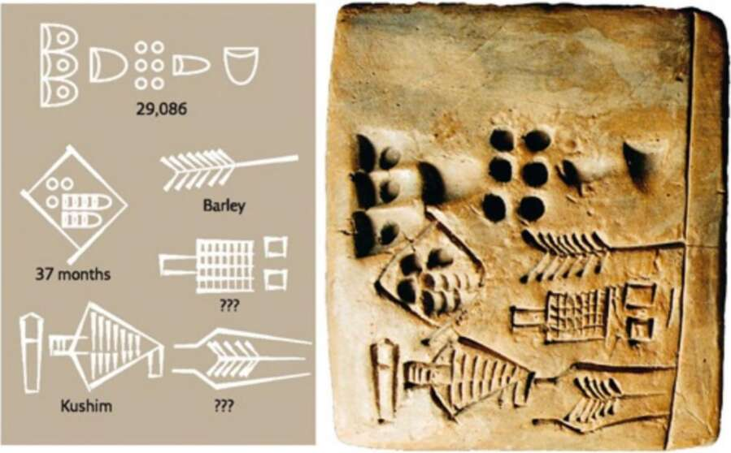

19. A clay tablet with an administrative text from the city of Uruk, c.3400-3000 Bc. ‘Kushim’ may be the generic title of an officeholder, or the name of a particular individual. If Kushim was indeed a person, he may be the first individual in history whose name is known to us! All the names applied earlier in human history - the Neanderthals, the Natufians, Chauvet Cave, G6bekli Tepe - are modern inventions. We have no idea what the builders of Gobekli Tepe actually called the place. With the appearance of writing, we are beginning to hear history through the ears of its protagonists. When Kushim’s neighbours called out to him, they might really have shouted ‘Kushim!’ It is telling that the first recorded name in history belongs to an accountant, rather than a prophet, a poet or a great conqueror. ! At this early stage, writing was limited to facts and figures. The great Sumerian novel, if there ever was one, was never committed to clay tablets. Writing was time-consuming and the reading public tiny, so no one saw any reason to use it for anything other than essential recordkeeping. If we look for the first words of wisdom reaching us from our ancestors, 5,000 years ago, we’re in for a big disappointment. The earliest messages our ancestors have left us read, for example, ‘29,086 measures barley 37 months Kushim.’ The most probable reading of this sentence is: ‘A total of 29,086 measures of barley were received over the course of 37 months. Signed, Kushim.’ Alas, the first texts of history contain no philosophical insights, no poetry, legends, laws, or even royal triumphs. They are humdrum economic documents, recording the
